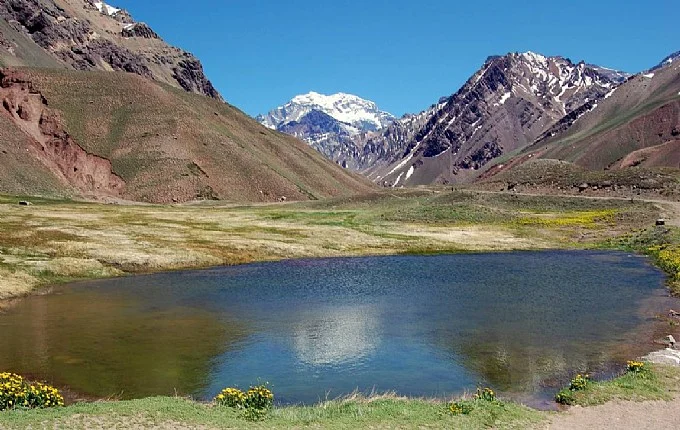
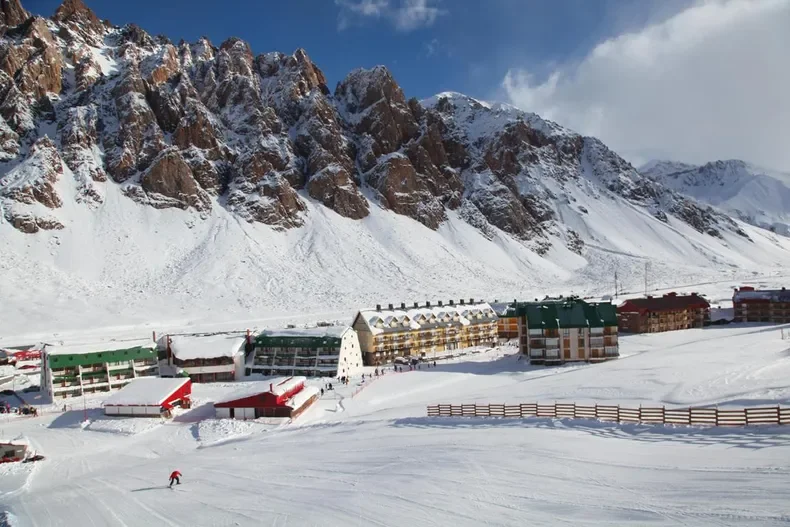
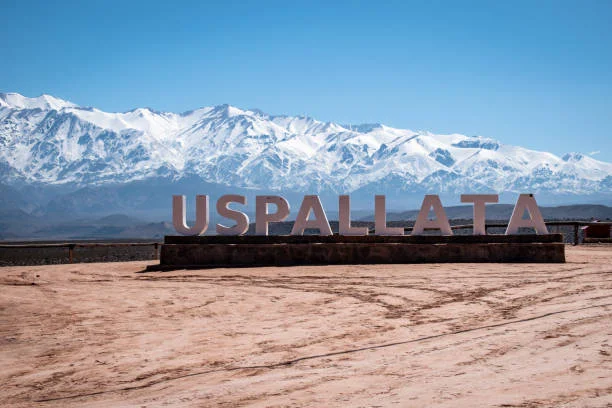

Caminatas alrededor de la laguna de horcones con vista a la pared sur del cerro Aconcagua (depende de las condiciones climáticas, recomendado para hacer en primavera y verano)
Potrerillos, lugar donde se encuentra nuestro dique, dotado de gran belleza
Penitentes, centro de esquí mas próximo a la ciudad y a 35 kilometros de Chile, en el verano es el principal punto de encuentro para expediciones al Aconcagua (parada solo en invierno)

Puente del Inca, este puente natural de origen biomineral es tan único que fue declarado patrimonio mundial por la Unesco. Esta formado por distintas capas de sedimentos y sales, se encuentra en la cordillera principal, a una altura de 2730 msnm. Es el broche de oro de la excursión
Uspallata, la ciudad que fue proteginista de nuestra historis: antes del cruce de los andes se reunieron allí dos grandes ejércitos para curzar la cordillera hacia Chile , y liberarlos del realismo. Lo hicieron a través del pado de Uspallata ¡Hace mas de 200 años!
